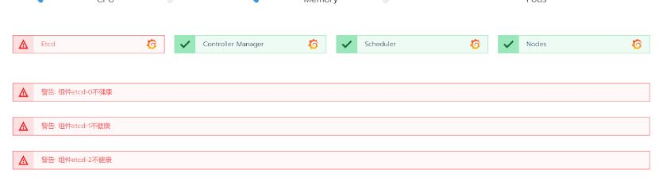
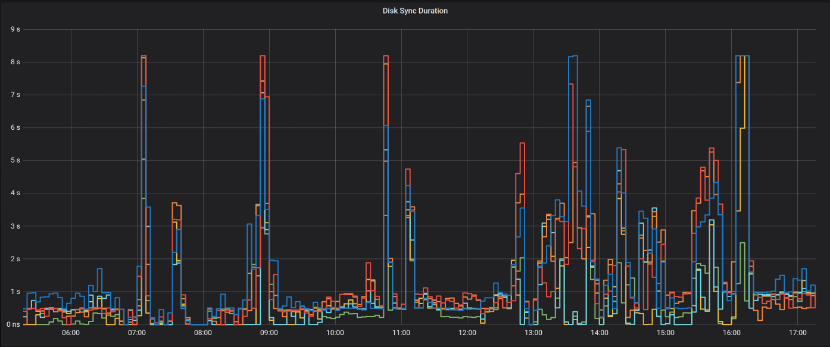
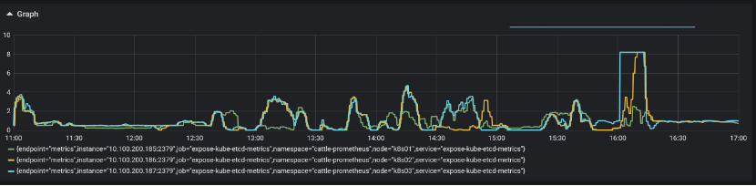
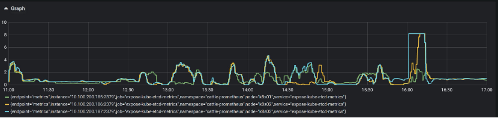
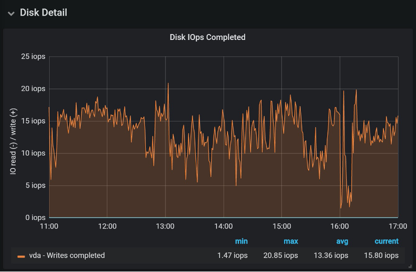
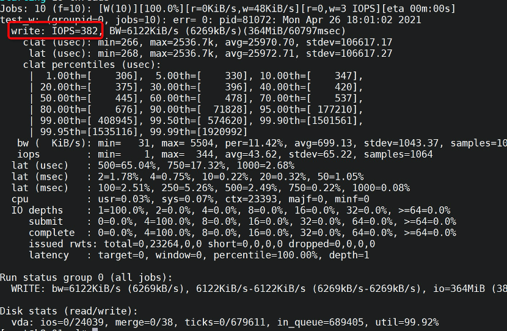
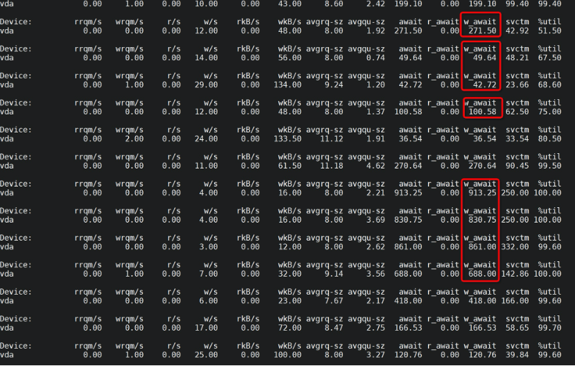

慢磁盘导致etcd不健康问题排查
现象
在Rancher中观察到K8S集群的etcd组件不健康：

观察Etcd的监控
因Rancher启用的集群监控，因此可以很方便的观察etcd的历史情况：

发现在历史上存在，磁盘同步耗时高达8秒的情况（图中尖刺）
同时根据 这篇文章 查询 wal_fsync 和 disk_commit 两个指标的P99值正常情况应该是在 25毫秒以内的。
查询wal_fsync，发现P99高达8秒：：
histogram_quantile(0.99, rate(etcd_disk_wal_fsync_duration_seconds_bucket[5m]))

查询disk_commit，发现P99页高达8秒：
histogram_quantile(0.99, rate(etcd_disk_backend_commit_duration_seconds_bucket[5m]))

观察节点的磁盘IO
这时就怀疑磁盘问题了，观察节点的Disk IO指标，发现磁盘IO最高只有20 IOPS，也许这个就是磁盘的最高IOPS了：

初步怀疑是磁盘能提供的IOPS较低造成的，根据Rancher文档，Etcd服务器的顺序IOPS应该最低50，推荐500。下面进一步验证。
测试磁盘IO
在Etcd服务器上执行下列指令测试顺序写的IOPS：
fio -filename=/var/test.file -direct=1 \
-iodepth 1 -thread -rw=write \
-ioengine=psync -bs=16k -size=2G -numjobs=10 \
-runtime=60 -group_reporting -name=test_w
得到382 IOPS：

磁盘IOPS也算基本可用，应该不存在问题。
观察etcd日志
docker logs --since '2021-04-26T16:00:00' --until '2021-04-26T16:30:00' etcd 2>&1 | less
存在大量落磁盘太慢的错误，以及请求超时的错误（etcd响应慢）。
到这里似乎走进了死胡同。
网络搜索类似问题
有人遇到同样问题，解决办法是更换了一块更快的硬盘。
那么为何性能测试IOPS还行，但是实际上却不行呢？尝试换个思路来排查。
观察磁盘IO延迟以及其他指标
执行命令：
iostat -d -x 1 vda
观察到：
- 磁盘IO写入完成等待时间波动比较大，在50ms到1000ms不等
- 平均写入请求的大小也在 8到11K左右
- 磁盘IO利用率在90%左右

观察etcd进程的IO请求
执行命令
pidstat -t -d 1
发现etcd有多个线程在进行磁盘的写操作，但这个是否会存在IO竞争从而导致写入完成等待时间超长，目前存疑。
跟踪etcd的系统调用
strace -p $(pgrep etcd) -e trace=write -o etcd_strace.log
得到的write实在太多，不具无法提取有效信息。
跟踪etcd的打开文件
lsof -p $(pgrep etcd) | egrep 'REG|DIR'
看到它打开的是wal以及db文件，这个和之前观察到的wal_fsync 和 disk_commit 对应的上。
思考一下
到这里，实际上已经从历史情况+当前情况应证了，etcd的确在做disk commit和wal fsync的事情，而且这两件事情的磁盘IO等待比较长。因此，就算性能测试下来结果还行，但依然有很大概率是磁盘IO性能不佳导致的问题。
结果
和客户沟通后，更换了超融合平台的存储，etcd服务器的IO等待降低到了正常水平，问题解决。